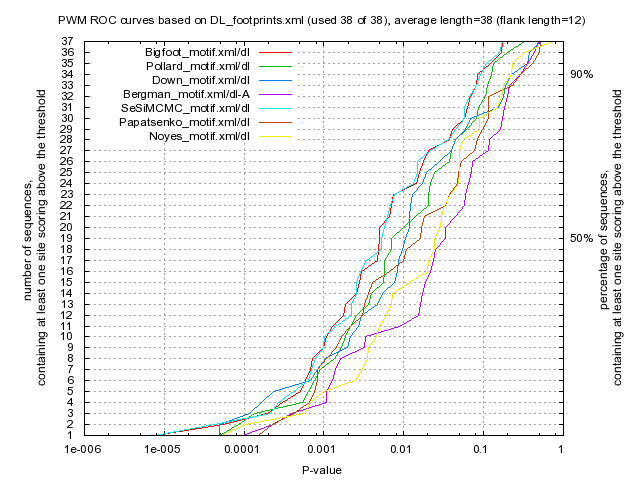

Kulakovskiy I.V., Favorov A.F., Makeev V.J. (2009) Motif discovery and motif finding from genome-mapped DNase footprint data. Bioinformatics 25(18): 2318-2325.
<up> DMMPMM motif DL comparison [dmmpmm_compare_html]
|  |
motif alignment
motif similarity
|
Bigfoot |
Pollard |
Down |
Bergman |
SeSiMCMC |
Papatsenko |
Noyes |
| Bigfoot |
1.0 |
0.3913 |
0.3124 |
0.2659 |
0.9566 |
0.3747 |
0.3158 |
| Pollard |
0.3913 |
1.0 |
0.4562 |
0.3381 |
0.3977 |
0.4415 |
0.4317 |
| Down |
0.3124 |
0.4562 |
1.0 |
0.2963 |
0.3106 |
0.3935 |
0.3208 |
| Bergman |
0.2659 |
0.3381 |
0.2963 |
1.0 |
0.2681 |
0.3575 |
0.3606 |
| SeSiMCMC |
0.9566 |
0.3977 |
0.3106 |
0.2681 |
1.0 |
0.3834 |
0.3206 |
| Papatsenko |
0.3747 |
0.4415 |
0.3935 |
0.3575 |
0.3834 |
1.0 |
0.4437 |
| Noyes |
0.3158 |
0.4317 |
0.3208 |
0.3606 |
0.3206 |
0.4437 |
1.0 |
|